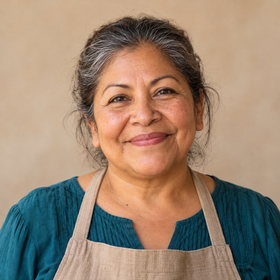

consola · Embotelladora del Nayar · CEDIS Tepic
{{ modTitle }}
{{ modSub }}
{{ k.l }}
{{ k.v }}
{{ k.s }}
Pedidos digitales por hora · Ruta 14
{{ b.v }}
{{ b.t }}
Actividad en vivo
{{ e.t }}{{ e.text }}
PedidoTiendaCanalCajasTotalEstadoHora
{{ d.tienda }}{{ d.sub }}Requiere atención
{{ l.q }}×{{ l.n }}{{ l.sub }}
Total {{ d.total }}
Ticket vs. promedio {{ d.delta }}
Mezcla no carbonatados {{ d.mix }}
Pago {{ d.pay }}
 Ilustración
IlustraciónAvance de la ruta{{ rutaAvance }}
Pedidos digitales en la ruta{{ rutaDig }}no requirieron captura del vendedor
{{ p.n }}
{{ p.tienda }}{{ p.det }}
{{ p.estado }}

Abarrotes La EsperanzaDoña Lupe · Centro, Tepic · cliente 10-4471{{ f.k }}{{ f.v }}
Ticket de las últimas semanas
{{ b.v }}{{ b.t }}
Refrigerador RF-20931
{{ refriTxt }}
{{ p.t }}{{ p.zona }}
Vistas hoy{{ p.vistas }}
Aplicadas hoy{{ p.aplicadas }}
FolioTiendaFallaEstado
{{ f.id }}{{ f.tienda }}{{ f.falla }}{{ f.estado }}
{{ c.n }}{{ c.pct }}
0%60%Recuadro negro: colonia de la tienda de la demo